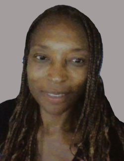
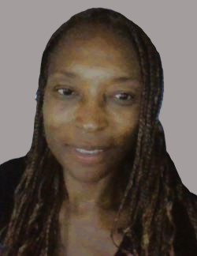
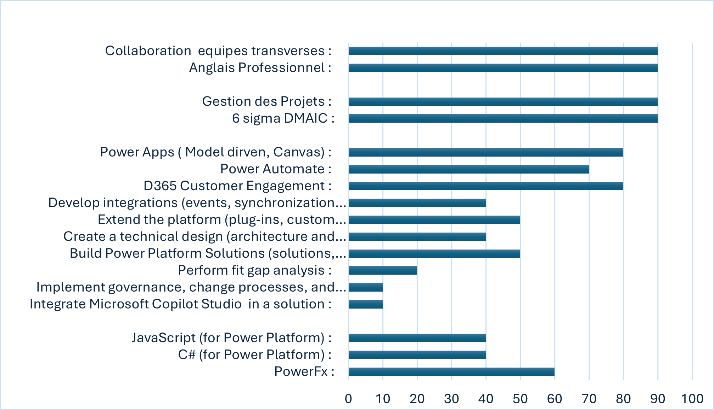
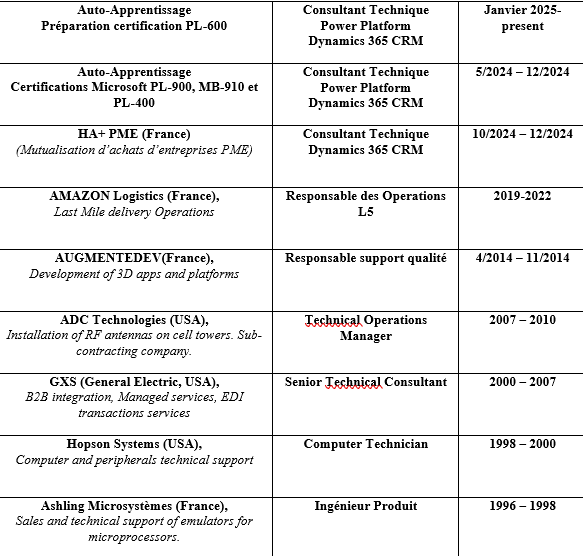

Passionnée par les technologies Microsoft, je souhaite participer à la conception, développement et l’implémentation de solutions technologiques autour de Power Platform, tout en étoffant mes compétences en architecture de solutions.
COMPETENCES :
EXPERIENCE :
